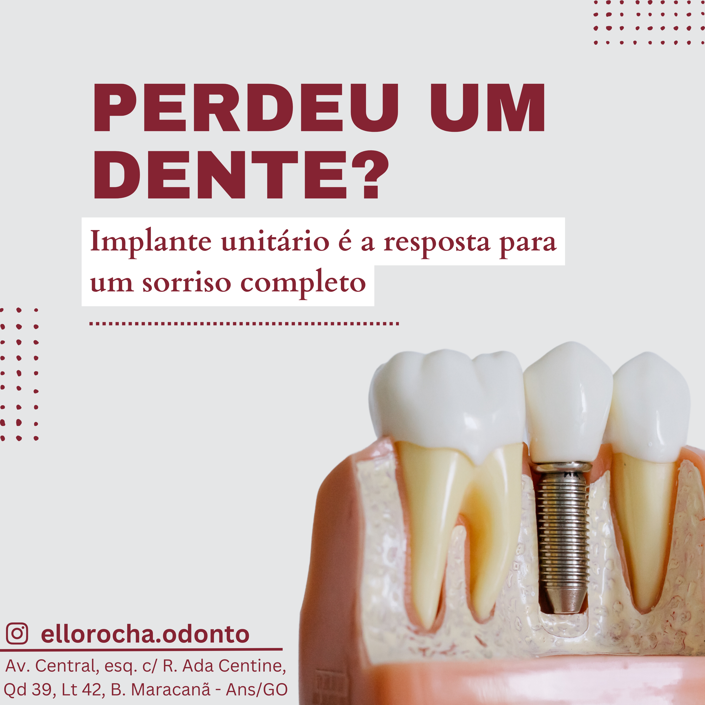
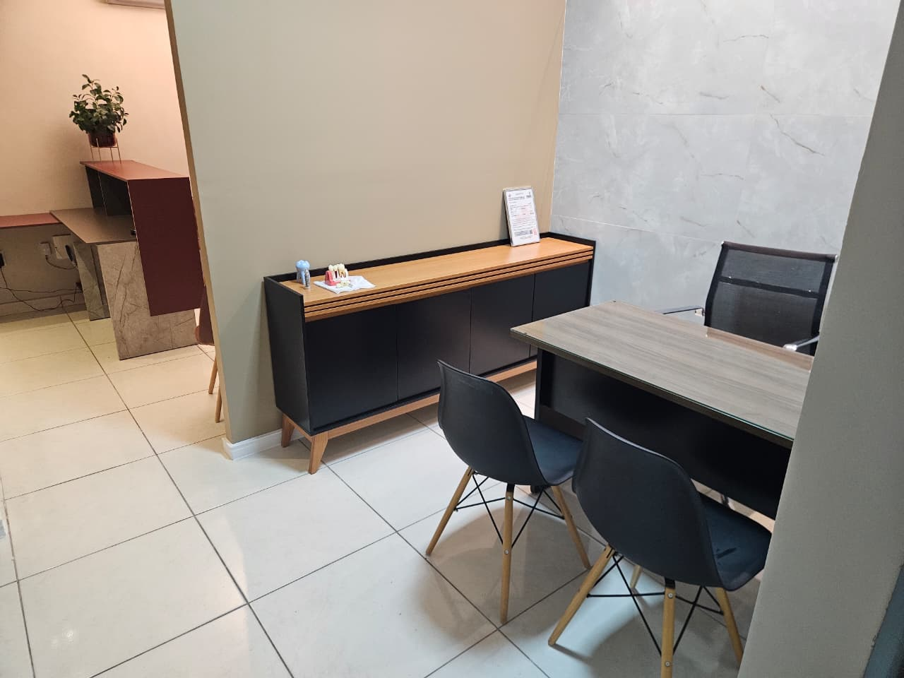

Volte a mastigar
e sorrir com confiança.
Os implantes substituem os dentes perdidos de forma fixa e natural, devolvendo função e autoestima. Um cuidado conduzido com técnica e atenção a cada etapa.

Mais do que estética,
é qualidade de vida.
Solução fixa
O dente volta a ficar firme, sem o incômodo das próteses removíveis.
Aparência natural
Próteses sobre implante feitas para se integrar ao seu sorriso.
Mastigação completa
Volte a comer o que gosta com segurança e conforto.
Preserva o osso
O implante estimula o osso, ajudando a manter a estrutura do rosto.
Não desgasta vizinhos
Diferente das pontes, não é preciso desgastar os dentes ao lado.
Cirurgia segura
Planejamento cuidadoso e protocolo rigoroso de biossegurança.

Cada etapa,
no tempo certo.
Avaliação
Exame clínico e de imagem para planejar o seu implante com precisão.
Cirurgia
Instalação do implante com anestesia local e protocolo seguro.
Integração
O implante se une ao osso ao longo das semanas de cicatrização.
Prótese
Colocação da coroa definitiva, devolvendo função e estética.
Dra. Stéphanie Caroline
Implantodontia & Cirurgia
CRO-GO 13715
Especialista em implantes e cirurgia, a Dra. Stéphanie une precisão técnica a um cuidado atencioso em cada detalhe — do planejamento à prótese final. É também responsável pela limpeza que tanto conquista os pacientes da elloRocha.
Sobre implantes.
O procedimento é feito com anestesia local, então você não sente dor durante a cirurgia. No pós-operatório, orientamos os cuidados para que tudo transcorra confortável.
Varia conforme cada caso, pois depende da cicatrização e integração do implante ao osso. Na avaliação explicamos as etapas e o tempo estimado para você.
Em muitos casos, sim. Existem soluções para reabilitar desde um único dente até arcadas completas. A avaliação define a melhor opção para o seu caso.
Recupere o seu sorriso completo.
Agende sua avaliação e descubra a melhor solução para você.